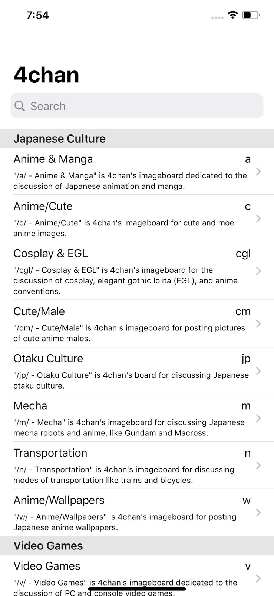
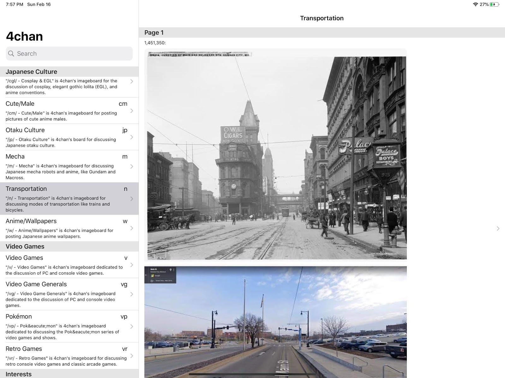
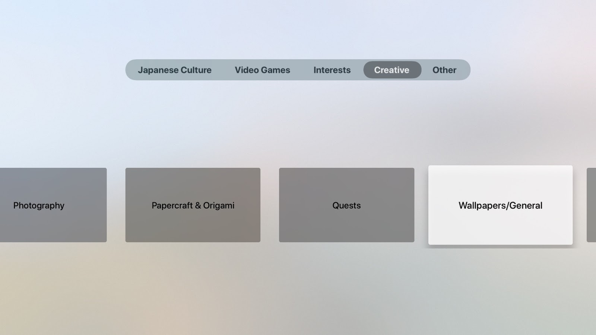

Building an image board browser using SwiftUI and Combine
As a hobby project, I've been writing an imageboard browser app to learn the SwiftUI and Combine libraries.
SwiftUI and Combine are available on many Apple platforms. So far I've gotten my imageboard browser working well on iPhone and iPad, and this weekend I got it working on Apple TV.
The iPhone and iPad run the same "Universal" app, which provides a vertical scrolling list and navigation stack UI that works well for both iPhone:
and iPad: 
The AppleTV app looks and acts quite differently:
The AppleTV app has a "lean back" UI. The core feature of the AppleTV app is a slideshow mode. You start the app, use the remote to pick an image board, and then the app plays a slideshow of all the images on that board. There can be thousands of images on some of the more active boards. The slideshow repeats, picking up any updated content each time through.
I used an elaborate Combine pipeline to fetch the images. This is the heart of the pipeline:
/// Combine Pipeline for Image Board Slideshow
public extension Publisher {
/// Perform requests after a delay.
func slowRequest(delay: DispatchQueue.SchedulerTimeType.Stride)
-> AnyPublisher<Self.Output, Self.Failure> {
var firstItem = true
let serialQueue = DispatchQueue(label: "slowRequest")
return self
.flatMap(maxPublishers: .max(1)) { (item: Self.Output)
-> AnyPublisher<Self.Output, Self.Failure> in
if firstItem {
firstItem = false
return Just(item)
.setFailureType(to: Self.Failure.self).eraseToAnyPublisher()
}
return Just(item)
.setFailureType(to: Self.Failure.self)
.delay(for: delay, scheduler:serialQueue).eraseToAnyPublisher()
}
.eraseToAnyPublisher()
}
/// Repeat the upstream publisher count times.
func repeating(_ count: Int) -> AnyPublisher<Self.Output, Self.Failure> {
Publishers.Sequence(sequence: 0..<count)
.flatMap(maxPublishers: .max(1)) { (_: Int)
-> AnyPublisher<Self.Output, Self.Failure> in
return self
.eraseToAnyPublisher()
}
.eraseToAnyPublisher()
}
}
// Publishes all the images in a board.
func publisher(board:BoardName, targetLength: CGFloat) -> AnyPublisher<UIImage?, Never> {
FourChanService.shared.posts(board:board)
.filter { post in
// Filter out posts that don't have renderable images.
guard let size = post.renderableImageSize else {
return false
}
// Filter out posts where the renderable image is too small
return min(size.width, size.height) >= targetLength/8
}
// When we get to the end of the stream, repeat.
.repeating(Int.max)
// Slow down requests to the slideshow rate.
.slowRequest(delay: 5)
.flatMap(maxPublishers: .max(1)) { post in
FourChanService.shared.dataPublisher(endpoint:post.image!)
.map {
ImageDataInContext(post:post, imageData:$0)
}
}
.tryMap {
if let image = downsample(imageData:$0.imageData, to: targetLength) {
return image
}
throw ImageLoaderError.couldNotDecodeImage
}
.map { Optional($0) }
.replaceError(with: nil)
.receive(on: DispatchQueue.main)
.eraseToAnyPublisher()
}
}
This single animated view displays the slideshow:
A SwiftUI Slideshow View
struct TVSlideshowView : View {
let publisher : AnyPublisher<UIImage?, Never>
@State private var uiImageA: UIImage? = nil
@State private var uiImageB: UIImage? = nil
@State private var imageAHasPriority: Bool = true
var body: some View {
ZStack {
decorate(uiImage: uiImageA, isImageA: true)
decorate(uiImage: uiImageB, isImageA: false)
}
.onAppear() {
UIApplication.shared.isIdleTimerDisabled = true
}
.onDisappear() {
UIApplication.shared.isIdleTimerDisabled = false
}
.onReceive(publisher) { uiImage in
self.updateImages(uiImage:uiImage)
}
}
func decorate(uiImage: UIImage?, isImageA: Bool) -> some View {
Group {
if uiImage != nil {
decorate(uiImage: uiImage!, isImageA: isImageA)
}
}
}
func decorate(uiImage: UIImage, isImageA: Bool) -> some View {
GeometryReader { proxy in
Image(uiImage:uiImage)
.renderingMode(.original)
.resizable()
.aspectRatio(contentMode: .fill)
.frame(width:proxy.size.width, height:proxy.size.height)
.animation(nil)
.opacity(self.imageAHasPriority == isImageA ? 1.0 : 0.0)
.animation(.easeOut(duration:0.6))
}
}
func updateImages(uiImage: UIImage?) {
if uiImage != nil {
imageAHasPriority.toggle()
if imageAHasPriority {
uiImageA = uiImage
} else {
uiImageB = uiImage
}
}
}
}
Issues
Although the code looks fairly clean now, I ran into some tricky problems while writing this code.
Combine request throttling
The slideshow makes multiple nested asynchronous requests to collect the image URLs:
repeatedly:
request all the threads in the image board:
for each thread, request all the posts in the thread:
for each post, if it is an image post, request the image data:
decode the image data into a UIImage
I ran into a problem where the earlier steps were not throttled, and so the image data was accumulating at a prodigious rate. I quickly exceeded the 2 GB memory limit for AppleTV apps.
Interestingly, if I displayed the images as quickly as possible, everything worked fine -- I ran the app for 20 minutes, displaying a new image every quarter of a second. Things only backed up when I changed the pipeline to work like this:
repeatedly:
request all the threads in the image board:
for each thread, request all the posts in the thread:
for each post, if it is an image post:
request the image data:
delay for 5 seconds:
decode the image data into a UIImage
In this pipeline, the image data accumulated in RAM, and that ended up killing the app.
Now Combine has the concept of back-pressure, and it's supposed to be possible to set up Combine pipelines so that this problem can be avoided. But unfortunately I couldn't get the backpressure to work in this pipeline. It might be due to my limited understanding, but it could also be due to a bug in Combine.
Luckily, I was able to work-around the issue by changing my pipeline to this:
repeatedly:
request all the threads in the image board:
for each thread, request all the posts in the thread:
for each post, if it is an image post:
delay for 5 seconds:
request the image data:
decode the image data into a UIImage
By moving the "delay for 5 seconds" step before the "request the image data" step, I avoided backing up the pipeline.
Image crossfading
SwiftUI has an extensive animation system, but it isn't well documented, and it has bugs and limitations. I wasn't able to do exactly what I wanted, but I was at least able to get something working.
The effect I wanted was: Each time a new image is received, fade it in in front of the previous image. Ideally the opacity of the old image stays at 100%, while the new image's opacity animates from 0% (transparent) to 100% (opaque).
The effect I was able to achieve was: Each time a new image is received, fade it in in front of the previous image, while simultaneously fading the old image from 100% opacity to 0% opacity.
This works, but has the drawback that in the middle of the transition, both the old and new images are partially transparent, and so the background color shows through.
I tried a number of approaches to work around this problem, but I just couldn't get things to work.
Now that I've got basic crossfading working, I'm tempted to add "Ken Burns" style pan-and-zoom animation, as well as effects like the old AppleTV Photos screensaver.
Conclusion
For what it's worth, Apple's Instruments tool tells me there's some memory leaks when running the pipeline. These are genuine leaks, rather than retain cycles. The leaked objects appear to be internal to the SwiftUI implementation. Luckily the leaks are on the order of a few kilobytes per second, so it's not too much of a problem in practice.
I think Combine and SwiftUI are still "beta" quality software. Hopefully things will improve with iOS 14.